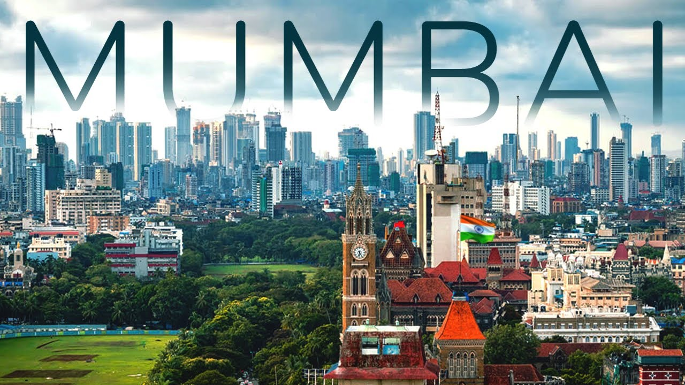

Lets Dive into Mumbai


Mumbai, the bustling metropolis on the west coast of India, is a vibrant amalgamation of tradition and modernity. As the financial capital of the country, it is a bustling hub of commerce and industry, adorned with iconic skyscrapers and a frenetic pace of life. Yet, amidst the concrete jungle, Mumbai retains its cultural richness, evident in the diverse array of street food, historical landmarks like the Gateway of India, and the vibrant markets of Colaba and Dadar. The city is also known for its resilience, having weathered challenges such as monsoons and terrorist attacks, while continuing to thrive as the heart of Bollywood, the world's largest film industry. With its bustling local trains, coastal charm, and a spirit that never sleeps, Mumbai is a city that captivates with its energy and diversity.